TECHVESTVENTURES RISK ALERTS — Daily Mode — Emergent News Digest — November 10, 2026, 9:00 AM EST see all graphs click TVV Risk Center
TVV RESEARCH DIGEST — November 10, 2026 — 12 desks
1. Major Geopolitical Conflict Developments
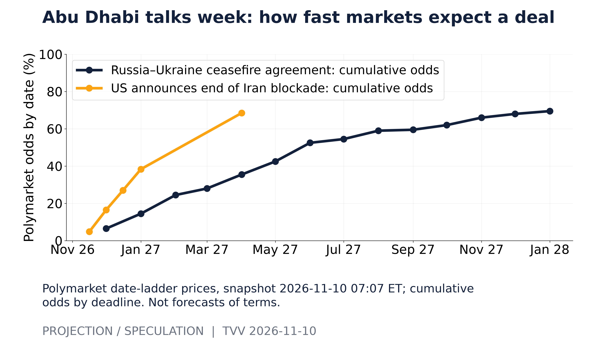
Abu Dhabi talks week: how fast markets expect a deal. Polymarket date-ladder prices, snapshot 2026-11-10 07:07 ET; cumulative odds by deadline. Not forecasts of terms. [Projection/Speculation; data as of 2026-11-10 07:07 ET] Source: polymarket.com data page
- ★ Abu Dhabi talks opened Tuesday: US, Russian and Ukrainian delegations began two days of US-brokered talks, their first direct round since February's failed Geneva meeting. US envoys Steve Witkoff and Jared Kushner lead for Washington; Kyiv's team, under Rustem Umerov, wants to cover prisoner exchanges and a possible maritime and energy ceasefire and lay groundwork for a leaders' summit. Before the session, Ukraine met UK, French, German, Italian, NATO and EU officials, who said any deal must respect Ukraine's sovereignty and give credible security guarantees. AP · Kyiv Independent · The Guardian
- ★ Framing gap to watch: Lavrov says the agenda puts "security issues concerning Russia, Ukraine and the region as a whole" on top and aims at principles for a comprehensive settlement, while Kushner has floated a new European security structure including Russia, modeled on the defunct NATO-Russia Council. Trump says the war can "end soon." Odds: Polymarket prices a ceasefire agreement at only 6.5% by Nov 30 but 70% by Dec 31, 2027 (see graph), so traders expect a slow process, not a quick deal. Washington Post · ABC News · Polymarket
- ★ Hormuz, Tuesday (conflicting claims, screen skeptically): the IRGC Navy says two oil tankers caught fire on an "unauthorized route," one a supertanker that hit a naval mine and the other allegedly escorted by US fighter jets. It named no ships, flags or casualties, and the US military has not confirmed jet involvement. UKMTO's weekly report counts 170 outbound and 155 inbound transits, about 65% below pre-war levels, and logged another tanker attacked off Khasab, Oman, on Monday with the crew evacuated; UKMTO, JMIC and Iranian counts differ by method. Anadolu · Iran International · Gulf News / UKMTO
2. Major Terror / Security Incidents
- ★ Bangladesh: a wave of crude-bomb blasts and arson hit Dhaka on Sunday evening into Monday, including a bomb inside the CID and Special Branch police headquarters compound in Malibagh, nine blasts on the Dhaka University campus, and bombs at Cantonment railway station, Uttara and near Khilkhet police station; a school bus was set on fire. No casualties were reported. Police detained three men at the university; videos show attackers on motorcycles shouting Awami League slogans. Energy Tribune
- ★ Colombia: a drone attack on an army base in Santa Rosa del Sur killed three soldiers and injured at least 16. No one has claimed it; the area is contested by the Gulf Clan, the ELN and FARC dissident groups. Just Security / AP
- ★ Cyber pace: CISA has added 289 actively exploited flaws to its KEV catalog so far in 2026, versus 245 in all of 2025 and 186 in 2024. Projection: at the year-to-date daily rate the catalog reaches about 336 additions by Dec 31 (see graph). The count reflects CISA's curation pace, not total exploitation. CISA KEV
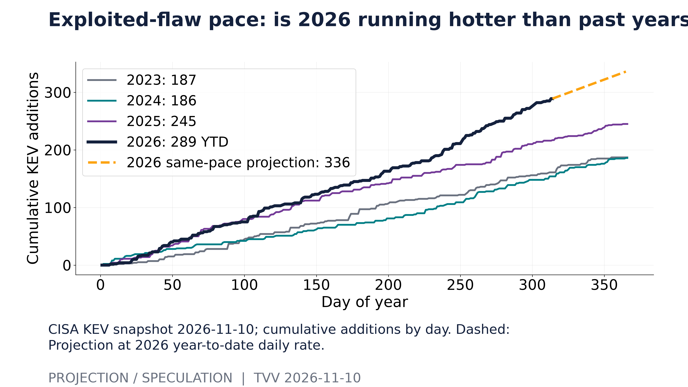
Exploited-flaw pace: is 2026 running hotter than past years?. CISA KEV snapshot 2026-11-10; cumulative additions by day. Dashed: Projection at 2026 year-to-date daily rate. [Projection/Speculation; data as of 2026-11-10] Source: cisa.gov data page
3. Earthquakes and Eruptions
- ★ No new M6.0+ quake with significant casualties or damage since the last issue. Below the threshold: an M5.7 in Aichi, central Japan (upper-5 intensity) injured 22 people and damaged homes and roads, per Asahi. Asahi Shimbun · USGS
- ★ Projection: the M7.0 of Oct 22 in Tibet (189 km ENE of Nagqu) has produced 23 M4.5+ aftershocks within 150 km. A simple decay fit implies about 6.5 more M4.5+ events in the next seven days (see graph). This is a simple statistical fit, not a USGS aftershock forecast, and it predicts no place or time. USGS
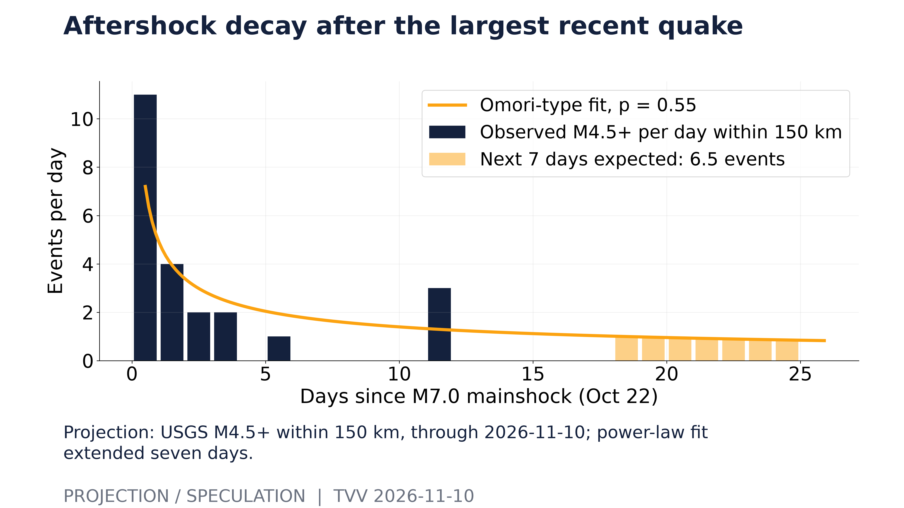
Aftershock decay after the largest recent quake. Projection: USGS M4.5+ within 150 km, through 2026-11-10; power-law fit extended seven days. [Projection/Speculation; data as of 2026-11-10] Source: earthquake.usgs.gov data page
4. Solar / Space Weather
- ★ Odds: NOAA's latest day-1 flare forecast gives a 60% chance of an M-class flare, 15% for an X-class flare and 15% for a proton event, and the 30-day history shows how often those odds have run this high (see graph). The 3-day outlook issued Nov 10 tops out at Kp 3.67 with no G1 or stronger storms expected. NOAA SWPC · NOAA SWPC 3-day forecast
- ★ Long-horizon watch: magnetic north keeps drifting toward Siberia in NOAA's measured and modeled data, but no one can predict the timing of a sudden geomagnetic shift. Michael Hentschel's own view: 2035 at the earliest, with critical earth changes along the way. Next weekly globe: Nov 15. NOAA NCEI
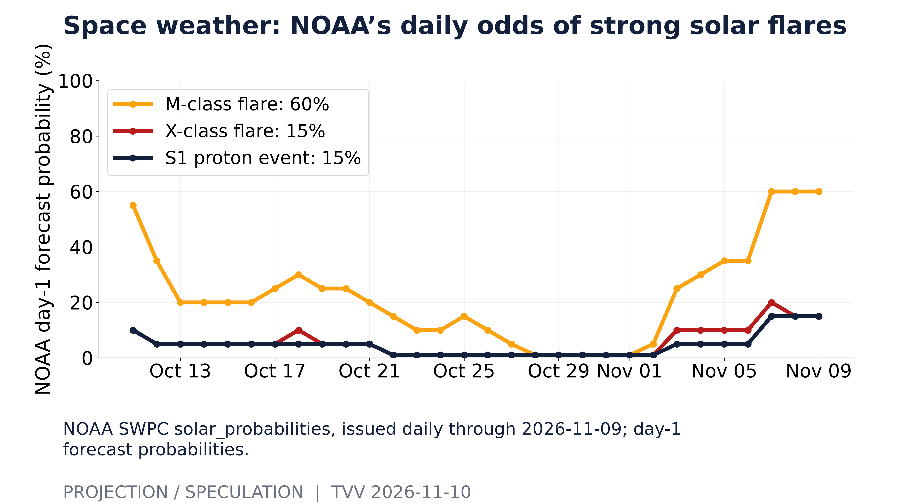
Space weather: NOAA’s daily odds of strong solar flares. NOAA SWPC solar_probabilities, issued daily through 2026-11-09; day-1 forecast probabilities. [Projection/Speculation; data as of 2026-11-09] Source: services.swpc.noaa.gov data page
5. Critical Infrastructure / Transportation Disruptions
- ★ Iraq update: Al Jazeera reports the Khor Mor drone strike cut power to more than 70% of Iraqi Kurdistan, removing 2,500–2,800 MW of generation; production stays suspended. Elsewhere Monday: a storm left 89 communities in Dagestan, Russia, without power; Nigeria's minister says a blackout tied to a vandalized transmission line is largely restored; and a substation fire in Mayfair, Johannesburg, left thousands without electricity. Al Jazeera · Moscow Times · Naija News · SABC
- ★ Data-center rent bills: SEC filings show when the operating-lease payments of the hyperscalers, Oracle and CoreWeave fall due (see graph). The ladder excludes leases signed but not yet started, which are often the largest data-center commitments. CoreWeave reports Q3 after Tuesday's close; its bar uses June 30 data. SEC EDGAR
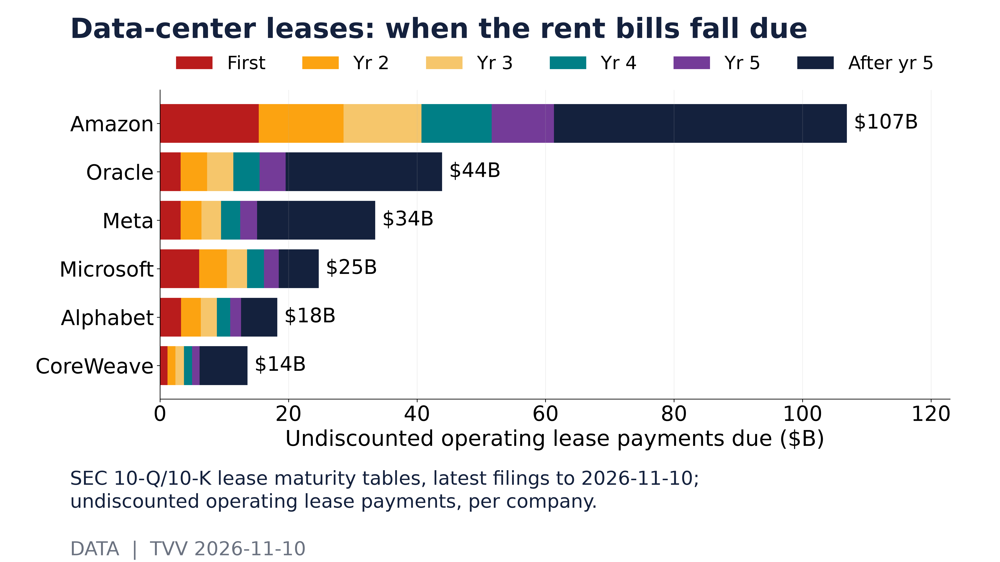
Data-center leases: when the rent bills fall due. SEC 10-Q/10-K lease maturity tables, latest filings to 2026-11-10; undiscounted operating lease payments, per company. [Data; data as of Latest quarter ends Jun–Sep 2026] Source: data.sec.gov data page
6. Econo-Metrics
- ★ Fed hawks: Governor Christopher Waller says he is "leaning toward" a December rate hike and that a 50 basis point hike "should be considered" if inflation runs hot, warning that only 25 basis points "would put our credibility at risk." Treasury yields rose before the CPI release: 2-year 4.62%, 10-year 4.894%, 30-year 5.27%. NFIB small-business optimism slipped to 97.8 in October from 97.9 as uncertainty eased. CNBC · NFIB
- ★ October CPI is out, without its usual annual rate: BLS omitted the 12-month change for headline and core CPI because October 2025 prices were never collected during the 2025 shutdown. BLS index data show seasonally adjusted CPI up about 0.35% from September and core up about 0.30% (computed from the published index levels), against Dow Jones forecasts of 0.3% and 0.2%, so core ran hotter than expected. Odds: before the release, Polymarket priced core month over month at 0.2% as the favorite at only 51.5%, and the data point to 0.3% instead; its annual-rate buckets (3.7% at 93.8%) now face a release with no official annual figure (see graph, pre-release snapshot). Investing.com · BLS data API · Polymarket
- ★ Paychecks versus prices: real hourly earnings growth (wage growth minus CPI inflation) was −0.6 percentage points for all private workers and −0.3 points for production workers in September (see second graph), so pay is trailing inflation. BLS says the year-over-year real earnings figure for October will not be published, for the same shutdown data gap. FRED / BLS
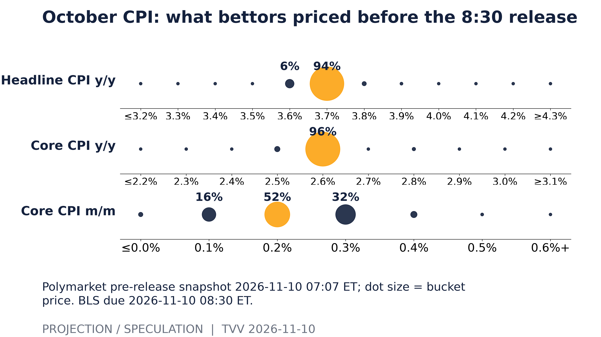
October CPI: what bettors priced before the 8:30 release. Polymarket pre-release snapshot 2026-11-10 07:07 ET; dot size = bucket price. BLS due 2026-11-10 08:30 ET. [Projection/Speculation; data as of 2026-11-10 07:07 ET] Source: polymarket.com data page
7. Epidemic / Bio-Metrics
- ★ US respiratory season: all 10 HHS regions saw influenza-like illness rise over the past four weeks; the NY/NJ region is highest at 3.91% of visits against 2.84% nationally (see graph). ILI is symptom-based, not lab-confirmed flu, and recent weeks can be revised. China's CDC also reports flu positivity rising (15.6% of outpatient ILI samples in week 44), with H1N1's share growing. CDC FluView · China CDC
- ★ COVID watch: China CDC's week 44 sentinel data show SARS-CoV-2 in 1.3% of outpatient ILI samples (down 0.5 points) and 1.4% of severe inpatient cases, with no unknown pathogens found, so official data still do not show a China surge. Taiwan CDC said in mid-October that SV.2.4 made up nearly 20% of community COVID detections over four weeks but saw no sign of greater spread, immune escape or severity. China CDC · CTi News / Taiwan CDC
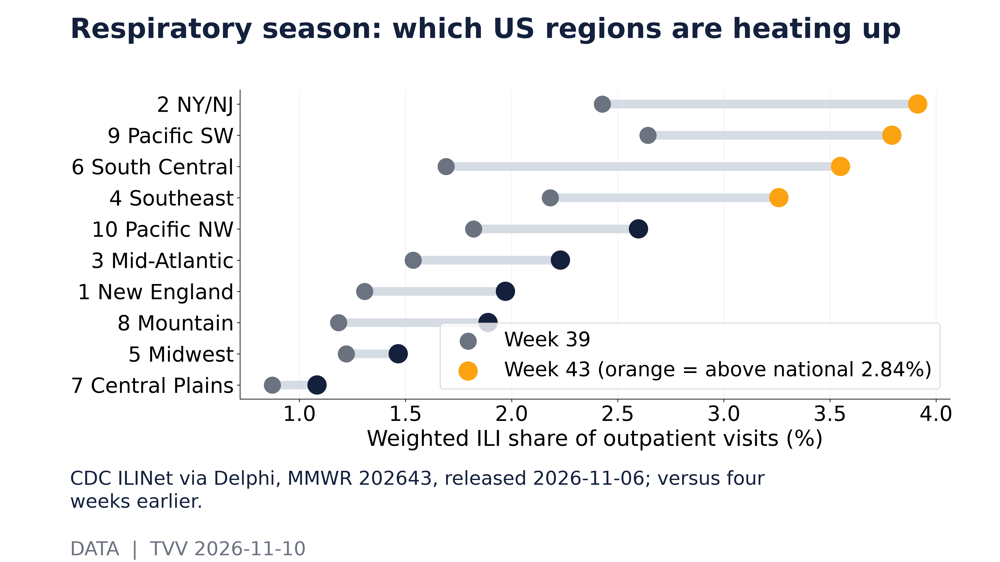
Respiratory season: which US regions are heating up. CDC ILINet via Delphi, MMWR 202643, released 2026-11-06; versus four weeks earlier. [Data; data as of MMWR 202643] Source: api.delphi.cmu.edu data page
8. Gold and Silver and Commodities
- ★ Brent fell below $90 a barrel on Tuesday for the first time since August, dropping about 3% to $89.62, after Trump played down further strikes on Iran; WTI was near $85, and Brent is down about 12% over the week (Anadolu). Gold gave back gains to about $4,078 an ounce and silver to about $52.27, as markets price an 84% chance of a December Fed hike, up from 78% a week earlier. Gold is still up about 4.8% on the week. Moneycontrol · Anadolu · Exa market data
- ★ Odds: options imply bigger swings ahead in oil than in gold. Cboe's oil volatility index (OVX) is 57.2 versus 24.9 for gold (GVZ), and gold's implied volatility is compared with its realized swings (see graph). Implied volatility prices uncertainty, not direction, and usually runs above realized. Cboe
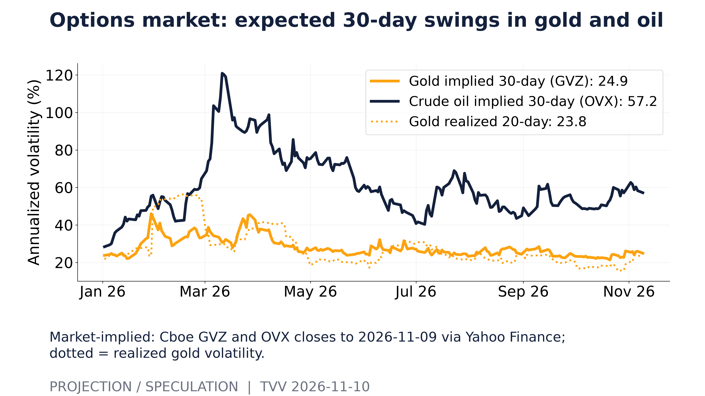
Options market: expected 30-day swings in gold and oil. Market-implied: Cboe GVZ and OVX closes to 2026-11-09 via Yahoo Finance; dotted = realized gold volatility. [Projection/Speculation; data as of 2026-11-09] Source: query1.finance.yahoo.com data page
9. Stock Averages and Nasdaq Major Movers
- ★ Monday rally: the S&P 500 rose 2.35% to 7,549.94, its best day since April 8; the Dow added 1,104 points (2.15%) to 52,389.75 and the Nasdaq gained 2.74% to 25,253.14, helped by falling oil. Nvidia fell 4.27% to $178.67 on its CEO probe, while AMD jumped 13.3% to $508.58 on an Oppenheimer upgrade and a Google Cloud chip win and Intel rose 5.5%. Data conflict: one Motley Fool recap lists the S&P at 7,556 (+2.43%); CNBC and AP figures are used here. CNBC · AP · Yahoo Finance / Motley Fool
- ★ Odds: Cboe's SKEW index, which prices protection against rare crashes, is at 150 while the VIX is at 19.9, so tail insurance stays expensive even as everyday fear eases (see graph). SKEW has a weak record as a crash predictor. Cboe
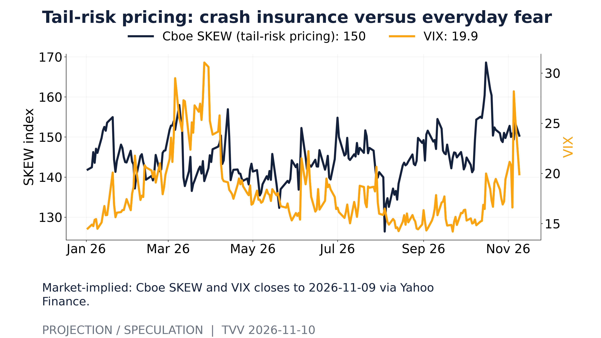
Tail-risk pricing: crash insurance versus everyday fear. Market-implied: Cboe SKEW and VIX closes to 2026-11-09 via Yahoo Finance. [Projection/Speculation; data as of 2026-11-09] Source: query1.finance.yahoo.com data page
10. Polymarket and Kalshi Sentiment Highlights
- ★ Odds: Polymarket's October PPI market, which settles Friday, puts the median bucket at 6.6% year over year, with 24% on 6.8% or higher, against 6.3% in September (see graph); after this morning's hotter core CPI, Friday's print is the next test for a December hike. Volume is only about $57,000, and the raw prices summed above 100% before renormalizing, so treat it as a thin signal. Polymarket
- ★ Odds roundup: markets price an 84% chance of a December Fed hike (from 78% a week ago); Polymarket's Ukraine ceasefire ladder sits at 6.5% by Nov 30; and the end-of-blockade market for Iran is at 4.9% by Nov 15. Alaska's Senate count (ranked-choice tabulation Nov 18) has Polymarket pricing Peltola at 98.7%. Moneycontrol · Polymarket
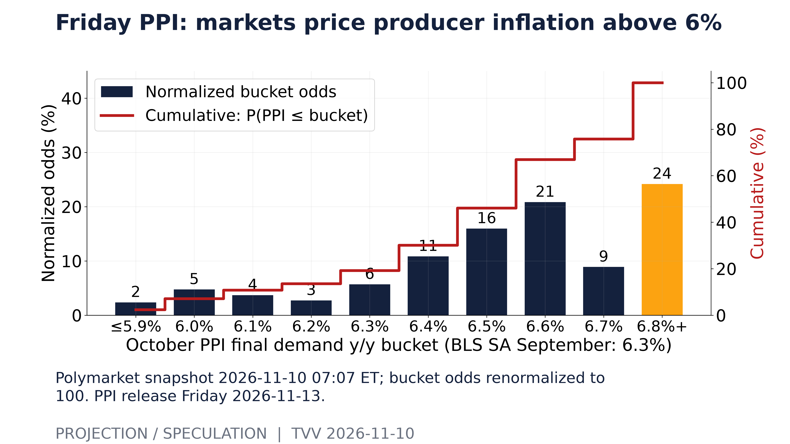
Friday PPI: markets price producer inflation above 6%. Polymarket snapshot 2026-11-10 07:07 ET; bucket odds renormalized to 100. PPI release Friday 2026-11-13. [Projection/Speculation; data as of 2026-11-10 07:07 ET] Source: polymarket.com data page
11. Tech-Metrics
- ★ Nvidia probe widens: a shareholder has sued Nvidia and CEO Jensen Huang, alleging investors were misled by the failure to disclose his relationship with a woman US agencies call a Chinese intelligence asset, and Trump says the FBI is looking into the affair while saying he backs Huang. Odds: Polymarket prices Huang's removal or resignation by Dec 31 at 13.5%, up from 10.5% when the market opened Nov 8 (see graph); odds are not evidence of wrongdoing. AP · AP · NBC News · Polymarket
- ★ Model race: Meta released Muse Ember, its smallest and cheapest model, aimed at agent tool use, coding and routing at $0.10 per million input tokens, and Anthropic listed Claude Fable 5.2 at $8 / $40 per million tokens. API prices for several Chinese and open-weight models swung Monday, with MiniMax M3.1 Flash briefly doubling. Meta AI · LLM Live digest
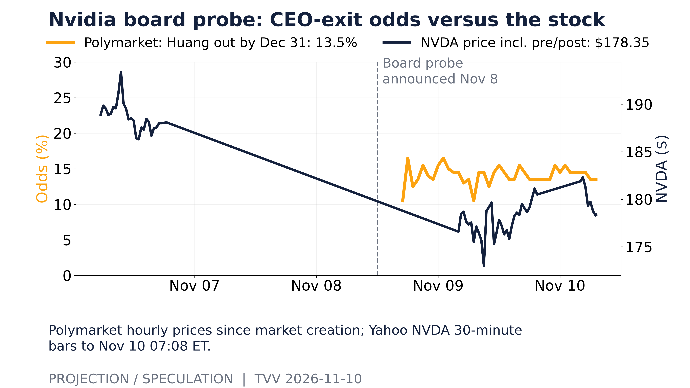
Nvidia board probe: CEO-exit odds versus the stock. Polymarket hourly prices since market creation; Yahoo NVDA 30-minute bars to Nov 10 07:08 ET. [Projection/Speculation; data as of 2026-11-10 07:07 ET] Source: polymarket.com data page
12. AI Hypergrowth Risks
- ★ AI success: Anthropic says a team of 1,000 agents running an early Claude Fable 5.2 reproduced a machine-checked proof of Fermat's Last Theorem in 28.7 hours without human steering, using one-third the output tokens of the original September effort and a proof one-seventh as long. Helpers first judged 47 of 60 milestones infeasible, then proved most of them; every shell command passed a safety classifier in a sandbox with no internet. Anthropic
- ★ Concentration risk: GitHub Copilot logged problems for the full 24 hours of Nov 9, including degraded availability for OpenAI's Codex models and timeouts from a surge in anonymous traffic; ChatGPT had 1 hour 43 minutes of conversation errors and the OpenAI API 53 minutes, which also broke OpenAI requests in Cursor for 34 minutes. One upstream provider failing rippled into the tools built on it. LLM Live digest · OpenAI status
- ★ Build-out math: SEC filings show trailing four-quarter capex absorbing a rising share of operating cash flow at the hyperscalers, Oracle and CoreWeave; above 100% means building faster than operations pay for, with the gap filled by cash, debt or leases (see graph). Finance leases and off-balance-sheet vehicles are excluded, so true spending is higher. SEC XBRL
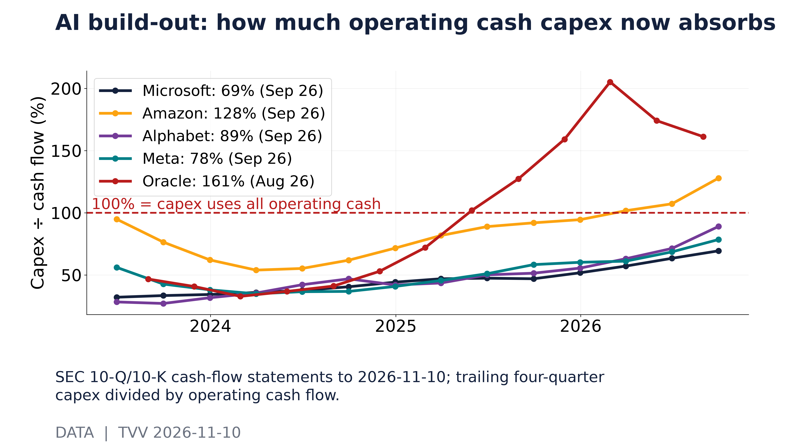
AI build-out: how much operating cash capex now absorbs. SEC 10-Q/10-K cash-flow statements to 2026-11-10; trailing four-quarter capex divided by operating cash flow. [Data; data as of Latest quarter ends Aug–Sep 2026] Source: data.sec.gov data page
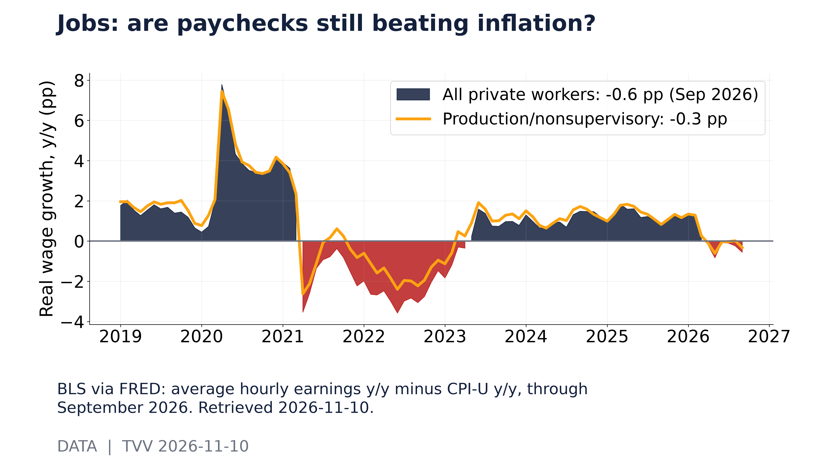
Jobs: are paychecks still beating inflation?. BLS via FRED: average hourly earnings y/y minus CPI-U y/y, through September 2026. Retrieved 2026-11-10. [Data; data as of 2026-09] Source: fred.stlouisfed.org data page
TECHVESTVENTURES ACTION-ALERT — November 10, 2026 see all graphs click TVV Risk Center
EDITOR — Michael Hentschel
Most news events require or spawn no action or reaction, some (but not many) are or become warnings. We draw attention to substantial lifestyle risks and market risks in particular, some created by Mid-Term Vote anxieties, Middle East tensions, vast over-indebtedness globally, and other events we track. Longer term but capable of causing sudden power surges as serious as the Carrington Event. Climate instability occasioned by long-term cyclical solar electro-magnetic flares, is becoming much more prominent and even more likely. New AI predictive analytics and pattern seekers are pointed in some of these directions, and we monitor imminent likelihood. Some readers might hedge and others might see opportunity. The above is not investment advice.